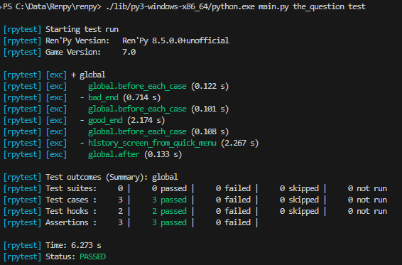

Автоматизированное тестирование
Ren'Py позволяет создателям встраивать автоматизированные тесты в свои игры, чтобы убедиться, что изменения в игре не нарушают существующую функциональность. Это особенно полезно для больших игр или игр, которые часто обновляются.
Двумя основными компонентами системы тестирования являются инструкции testcase и
testsuite.
Функция renpy.is_in_test() помогает определить, выполняется ли в данный момент
тест или нет.
Запуск тест-кейсов
Тест-кейсы можно запустить двумя способами. Первый — из лаунчера, нажав кнопку
«Run Testcases». Второй — из командной строки, используя
команду test. В обоих случаях по умолчанию запускается тест-кейс или набор тестов
с именем global.
Кнопка «Run Testcases» присутствует в лаунчере только в том случае, если в глобальном наборе тестов существует хотя бы один тест-кейс. Тест-кейсы и наборы тестов, найденные на верхнем уровне файла скрипта Ren'Py, автоматически добавляются в глобальный набор тестов. При добавлении первого тест-кейса в проект запустите игру как обычно, а затем нажмите «refresh» в лаунчере, чтобы появилась кнопка «Run Testcases».
Инструкция Testcase
Инструкция testcase создаёт именованный тест-кейс. Каждый кейс содержит
блок тестовых инструкций (см. ниже). Тест-кейсы похожи на
метки Ren'Py, но с несколькими отличиями:
Инструкция label в Ren'Py принимает код Ren'Py, в то время как инструкция testcase принимает тестовые инструкции (перечисленные на этой странице). Они взаимоисключающие.
В testcase нет эквивалента инструкции return.
Не может быть тестовых инструкций вне тестового блока, в то время как код Ren'Py может находиться вне меток.
Принимает следующие свойства:
- description
Строка, описывающая тест-кейс. Используется в отчёте о тестировании.
- enabled
Если это выражение вычисляется как
False, тест пропускается. По умолчаниюTrue.Это позволяет условно отключать тесты, например, на платформах, где они не поддерживаются.
testcase windows: enabled renpy.windows ... testcase not_on_mobile: enabled not renpy.mobile ...
Подробнее см. Пропуск тест-кейсов.
- only
Если это выражение вычисляется как
True, будет запущен только этот тест-кейс (и другие тесты сonly True). По умолчаниюFalse.Подробнее см. Пропуск тест-кейсов.
- xfail
Если это выражение вычисляется как
True, ожидается, что тест завершится неудачно. Если тест действительно завершится неудачно, он будет помечен как xfailed, а не failed. По умолчаниюFalse.
- parameter
Имя переменной (или кортеж имён переменных) и список значений (или список кортежей значений). Тест будет запускаться один раз для каждого значения (или кортежа значений) в списке.
Тест может иметь несколько свойств
parameter, и в этом случае тест будет запускаться для каждой возможной комбинации значений.Подробнее см. Параметризованные тесты.
Инструкция Testsuite
Инструкция testsuite используется для группировки тест-кейсов. Наборы тестов
могут содержать тест-кейсы, другие наборы тестов и хуки (см. ниже).
Набор тестов по умолчанию называется global и создаётся Ren'Py
автоматически, если не указан пользователем. Он содержит все остальные наборы тестов
и тест-кейсы верхнего уровня в игре.
Принимает те же свойства, что и инструкция testcase.
Хуки
Инструкция testsuite может содержать следующие хуки:
- setup
Блок тестовых инструкций, который выполняется один раз перед запуском любых тестов, содержащихся в текущем наборе.
- before testsuite
Блок тестовых инструкций, который выполняется многократно, перед каждым набором тестов в текущем наборе.
- before testcase
Блок тестовых инструкций, который выполняется многократно, перед каждым тест-кейсом в текущем наборе.
- after testcase
Блок тестовых инструкций, который выполняется многократно, после каждого тест-кейса в текущем наборе. Выполняется даже если тест-кейс завершился с ошибкой или вызвал исключение.
- after testsuite
Блок тестовых инструкций, который выполняется многократно, после каждого набора тестов в текущем наборе. Выполняется даже если набор тестов завершился с ошибкой или вызвал исключение.
- teardown
Блок тестовых инструкций, который выполняется один раз после запуска всех тестов, содержащихся в текущем наборе. Выполняется даже если тест завершился с ошибкой или вызвал исключение.
Хуки before * и after * принимают следующие свойства:
- depth
Целое число, указывающее, на какую глубину должен применяться хук.
Для тест-кейсов по умолчанию
-1, что означает применение ко всем вложенным наборам тестов и тест-кейсам.Для наборов тестов по умолчанию
0, что означает применение только к наборам тестов, непосредственно содержащимся в текущем наборе.Подробнее см. Жизненный цикл тестового запуска.
Жизненный цикл тестового запуска
В этом разделе описывается порядок выполнения тест-кейсов и наборов тестов, а также вызова хуков. Следующий пример иллюстрирует это:
Код |
Порядок выполнения |
|---|---|
testsuite global:
# Hooks
setup:
skip until main_menu
before testsuite:
if not screen "main_menu":
run MainMenu(confirm=False)
click "Start"
before testcase:
$ print("Starting a testcase.")
after testcase:
$ print("Finished a testcase.")
after testsuite:
$ print("Finished a testsuite.")
teardown:
exit
# Subtests
testsuite basic:
testcase first_testcase:
advance
testsuite test_choices:
# Hooks
setup:
run Jump("chapter1")
before testcase:
advance until menu choice
after testcase:
$ print("Finished a choice test.")
teardown:
$ print("Finished all choice tests.")
# Subtests
testcase choice1:
click "First Choice"
testcase choice2(enabled=False):
click "Second Choice"
testcase choice3:
click "Third Choice"
|
global :: setup global :: before testsuite global :: before testcase simple :: first_testcase global :: after testcase global :: after testsuite global :: before testsuite test_choices :: setup global :: before testcase test_choices :: before testcase test_choices :: choice1 test_choices :: after testcase global :: after testcase global :: before testcase test_choices :: before testcase test_choices :: choice3 test_choices :: after testcase global :: after testcase test_choices :: teardown global :: after testsuite global :: teardown |
Обратите внимание, что global :: before testcase и global :: after testcase
выполняются до и после каждого тест-кейса, даже если тест-кейс находится
внутри вложенного набора тестов.
Чтобы ограничить область действия хука, установите его свойство depth.
Установка значения 0 приведёт к тому, что хук будет выполняться только для тестов,
находящихся непосредственно в наборе тестов, содержащем хук.
Например:
testsuite global:
before testcase:
depth 0
$ print("Starting a testcase.")
С другой стороны, хуки before testsuite и after testsuite
имеют depth по умолчанию равное 0, что означает, что они будут выполняться только для наборов тестов,
находящихся непосредственно в наборе тестов, содержащем хук.
Чтобы расширить область действия хука на вложенные наборы тестов и тест-кейсы,
установите его свойство depth в -1 (для бесконечной глубины) или положительное
целое число (для определённой глубины).
Примечание
Когда набор тестов завершает выполнение, игра не закрывается сама. Вместо этого она возвращает управление игрой игроку, ожидая пользовательского ввода.
Чтобы закрыть игру после выполнения набора тестов, можно использовать тестовую
инструкцию exit в after хуке набора тестов. Например:
testsuite global:
teardown:
exit
Пропуск тест-кейсов
Если тест-кейс пропущен, он не будет выполнен. Кроме того,
хуки before testcase и after testcase набора тестов не будут выполнены
для этого тест-кейса.
Если в наборе тестов пропущены все тесты, то хуки setup и
teardown также не будут выполнены. Кроме того, хуки
before testsuite и after testsuite не будут выполнены из
родительского(-их) набора(-ов) тестов.
Параметризованные тесты
Тест-кейс можно запустить несколько раз с разными значениями, используя свойство parameter.
Для этого укажите имя переменной и список значений. Тест будет запущен один раз для каждого значения в списке. Например:
testcase example:
parameter x = [1, 2, 3]
assert eval (x > 0)
testcase clicks:
parameter button = ["A","B"]
click expression button
Это запустит тест три раза: один раз с x = 1, один раз с x = 2
и один раз с x = 3. Затем он нажимает на кнопки с именами "A" и "B".
При каждом запуске будут выполняться хуки before testcase и after testcase,
и каждый тест будет отображён отдельно в отчёте о тестировании.
Сгруппированные параметры
Можно указать несколько переменных одновременно, сгруппировав их в скобки и предоставив список групп значений. Например:
testcase addition:
parameter (x, y, z) = [ (1, 2, 3), (2, 3, 5), (3, 5, 8) ]
assert eval (x + y == z)
Это будет запущено трижды, каждый раз с использованием одного набора значений:
(1, 2, 3), (2, 3, 5) и (3, 5, 8).
Комбинации параметров
Если предоставлено несколько свойств parameter, тест-кейс будет запущен
для каждой возможной комбинации значений. Например:
testcase combinations:
parameter a = [1, 2]
parameter b = [3, 4]
parameter c = [5, 6]
assert eval (a + b + c in [9, 10, 11, 12])
Это будет запущено восемь раз, по одному разу для каждой комбинации (a, b, c):
(1, 3, 5),(1, 3, 6),(1, 4, 5),(1, 4, 6),(2, 3, 5),(2, 3, 6),(2, 4, 5),(2, 4, 6)
Можно смешивать сгруппированные параметры с несгруппированными. Например:
testcase mixed:
parameter a = [1, 2]
parameter (b, c) = [ (3, 5), (4, 6) ]
assert eval (a + b + c in [9, 10, 11, 12])
Это будет запущено четыре раза с использованием следующих комбинаций для (a, (b, c)):
(1, (3, 5)),(1, (4, 6)),(2, (3, 5)),(2, (4, 6))
Использование параметров в выражениях
Вы можете использовать параметры в любом свойстве теста, которое принимает выражение.
Например, вот тест, который запускается трижды, по одному разу для каждого значения x.
Тест пройдёт успешно, когда x равен 0 или 1, и ожидается, что он завершится неудачно (xfail), когда x равен 2:
testcase choice_test:
parameter x = [0, 1, 2]
xfail x == 2
assert eval (x < 2)
Вы также можете использовать параметры для выбора экранов или кнопок по имени.
Например, этот тест нажмёт либо на "first", либо на "second" вариант,
в зависимости от значения choice_text:
testcase show_menu:
parameter screen_name = ["preferences", "load"]
$ print(f"Showing screen '{screen_name}'")
run ShowMenu(screen_name)
pause until screen screen_name
run Return()
Параметры можно использовать, предварив их словом expression, для выбора кнопки по
имени параметра.
- testcase click_buttons:
parameter button_name = ["Load", "Save"]
click expression button_name
Параметры также можно использовать внутри блоков кода Python.
Например, этот тест выводит текущие значения x и y,
а затем производит щелчок в этой позиции:
testcase param_test:
parameter (x, y) = [(0.0, 0.0), (0.5, 0.5), (1.0, 1.0)]
$ print(f"Clicking at position ({x}, {y})")
click pos (x, y)
Наборы тестов
Параметры также могут быть предоставлены всему набору тестов. В этом случае все хуки и тест-кейсы внутри набора будут запущены один раз для каждого набора параметров.
Каждый параметризованный запуск выполнит хуки setup, before/after testsuite,
и teardown.
Например:
testsuite math_tests:
parameter (x, y, z) [ (1, 2, 3), (2, 3, 5), (3, 5, 8) ]
setup:
$ print(f"Running math tests with x={x}, y={y}, z={z}")
testcase addition:
assert eval (x + y == z)
testcase multiplication:
assert eval (x*y == z*y - y*y)
Параметры могут быть вложенными, и все комбинации будут протестированы. Например:
testsuite parameter_field:
parameter choice_text = ["first", "second"]
testcase param_test2:
parameter (x, y) = [(0.0, 0.0), (0.5,0.5)]
advance until screen "choice"
click choice_text
click pos (x, y)
Это будет запущено четыре раза, по одному разу для каждой комбинации (choice_text, (x, y)):
("first", (0.0, 0.0)),("first", (0.5, 0.5)),("second", (0.0, 0.0)),("second", (0.5, 0.5))
Предупреждение
Параметры теста передаются в тесты напрямую, без копирования. Если вы изменяете изменяемый параметр (например, список или словарь) внутри теста, это изменение повлияет на другие тесты, использующие тот же объект.
Исключения и ошибки
Если во время выполнения тест-кейса возникает ошибка:
Выполнение тест-кейса немедленно прекратится
Будет запущен хук
after testcaseнабора тестов, содержащего тест-кейсЕсли есть другие тест-кейсы, они продолжат выполняться (включая хук
before testcase)Если тест-кейсов больше нет, будет запущен
afterхук набора тестов
Если ошибка возникает во время выполнения хука (например, before testcase):
Выполнение набора тестов немедленно прекратится
Если набор тестов был вызван другим набором, родительский набор продолжит выполнение.
Если родительского набора нет, игра завершит тестовый запуск.
Отчётность о тестировании
После тестового запуска в консоль выводится отчёт, содержащий все тест-кейсы
и их результаты. Если указана опция --print_details, отчёт
будет включать дополнительную информацию о каждом тесте.
Ниже приведён пример отчёта о тестировании после успешного тестирования "The Question":

Результаты тестов
Тест может иметь один из следующих результатов:
Passed: Тест выполнен успешно, без ошибок.
Failed: Тест выполнен, но одна из инструкций завершилась неудачно.
XFailed: Ожидалось, что тест завершится неудачно (потому что его свойство
xfailбыло вычислено какTrue), и он действительно завершился неудачно.XPassed: Ожидалось, что тест завершится неудачно (потому что его свойство
xfailбыло вычислено какTrue), но вместо этого он прошёл успешно.Skipped: Тест был пропущен либо потому, что его свойство
enabledбыло вычислено какFalse, либо потому, что существует другой тест сonly True.
В целом, тест считается успешным, если его результат passed или xfailed, и неуспешным, если failed или xpassed.
Настройки тестирования
Следующие переменные можно установить для изменения поведения тестов:
- _test.maximum_framerate
Логическое значение, указывающее, следует ли использовать режим максимальной частоты кадров во время тестов. Это, по возможности, разблокирует частоту кадров выше частоты обновления вашего экрана. По умолчанию
True.
- _test.timeout
Число с плавающей точкой, указывающее максимальное количество секунд, которое тестовая инструкция должна ждать выполнения условия. По умолчанию
10.0.Это значение можно переопределить для отдельной инструкции, предоставив свойство
timeoutинструкциям, которые его поддерживают (например,assertиuntil).
- _test.force
Логическое значение, указывающее, следует ли принудительно продолжать тест, даже если
renpy.config.suppress_underlayимеет значениеTrue. По умолчаниюFalse.
- _test.transition_timeout
Число с плавающей точкой, указывающее максимальное количество секунд ожидания завершения перехода, прежде чем пропустить его и продолжить тест. По умолчанию
5.0.
- _test.focus_trials
Целое число, указывающее, сколько раз система тестирования должна пытаться найти допустимое место для перемещения мыши при использовании селектора без позиции. По умолчанию
100.
- _test.screenshot_directory
Строка, указывающая каталог для хранения скриншотов. По умолчанию
tests/screenshots.
- _test.vc_revision
Ревизия системы контроля версий (часто git) текущего исходного кода, если доступна. По умолчанию используется переменная окружения RENPY_TEST_VC_REVISION, или пустая строка, если она не установлена.
Тестовые инструкции
Тестовые инструкции — это строительные блоки тест-кейсов. Их можно условно разделить на три категории: инструкции-команды, инструкции-условия/селекторы и управляющие инструкции.
Основные команды
Advance
Тип: Команда
- advance
Продвигает игру на одну строку диалога.
advance
advance until screen "choice"
Exit
Тип: Команда
- exit
Выходит из игры, не вызывая экран подтверждения. Не сохраняет игру при выходе.
if eval need_to_confirm:
# Запрашивает подтверждение и выполняет автосохранение, если config.autosave_on_quit равно True
run Quit(confirm=True)
if eval persistent.quit_test_using_action:
# Не запрашивает, но всё равно выполняет автосохранение, если config.autosave_on_quit равно True
run Quit(confirm=False)
exit # не запрашивает и не сохраняет
Pass
Тип: Команда
- pass
Ничего не делает. Это пустая операция (no-op), позволяющая создавать пустые тест-кейсы.
testcase not_yet_implemented:
pass
Pause
Тип: Команда
- pause [time (float)]
Приостанавливает выполнение теста на заданное количество секунд. Аналогично инструкции pause, но требует указания значения, или может быть указана без времени, если за ней следует предложение until.
pause 5.0
pause until screen "inventory"
Run
Тип: Команда
- run <action>
Выполняет предоставленное действие языка экранов (или список действий).
Готово, если и когда кнопка, содержащая предоставленное действие (или список), станет активной.
testcase chapter_3:
run Jump("chapter_3")
Skip
Тип: Команда
- skip [fast]
Заставляет игру начать пропуск. Если игра находится в контексте меню, то это возвращает в игру. В противном случае просто включает пропуск.
Если указано fast, игра пропустит всё до следующего меню выбора.
skip
skip fast
skip until screen "choice"
Команды мыши
Click
Тип: Команда
- click [button (int)] [selector] [pos (x, y)]
Выполняет симуляцию щелчка на экране. Принимает следующие необязательные свойства:
buttonуказывает, какой кнопкой симулируемой мыши следует щелкнуть. Принимает целое число и по умолчанию равно 1. 1 — щелчок левой кнопкой, 2 — правой, 3 — средней, 4 и 5 — дополнительные кнопки на некоторых мышах. Обычно только 1 и 2 вызывают какую-либо реакцию в Ren'Py.
Если заданы selector и/или pos, виртуальная тестовая мышь перемещается в соответствии
с правилами инструкции move перед отправкой щелчка.
Click ведёт себя как предложение, принимающее паттерн, которому
паттерн не был предоставлен: если pos не указан, он будет искать нейтральное
место, где щелчок не произойдёт по фокусируемому элементу.
Drag
Тип: Команда
- drag <[selector] [pos (x, y)]> to <[selector] [pos (x, y)]> [button (int)] [steps (int)]
Симулирует действие перетаскивания на экране. Принимает следующие свойства:
Первая часть (до
to) указывает начальную точку перетаскивания. Она принимает необязательное свойствоselectorи/илиpos, которые интерпретируются в соответствии с правилами инструкции move.Вторая часть (после
to) указывает конечную точку перетаскивания. Она также принимает необязательное свойствоselectorи/илиpos, которые интерпретируются в соответствии с правилами инструкции move.buttonуказывает, какую кнопку симулируемой мыши следует использовать для перетаскивания. Принимает целое число и по умолчанию равно 1. 1 — левая кнопка, 2 — правая, 3 — средняя, 4 и 5 — дополнительные кнопки на некоторых мышах. Обычно только 1 и 2 вызывают какую-либо реакцию в Ren'Py.stepsуказывает, сколько промежуточных шагов должно быть при перетаскивании. Принимает целое число и по умолчанию равно 10. Большее количество шагов приводит к более плавному перетаскиванию, но также занимает больше времени.
drag id "item_icon" to id "inventory_slot_3" button 1 steps 20
drag pos (100, 200) to pos (400, 500) button 1
drag id "item_icon" pos (0.5, 0.5) to pos (300, 400) steps 5
drag pos (50, 50) to id "inventory_slot_1"
drag pos (50, 50) to pos (150, 150)
Move
Тип: Команда
- move [selector] [pos (x, y)]
Перемещает виртуальную тестовую мышь в заданную позицию на экране.
Если задан selector, и:
Если указан
pos, мышь перемещается в эту позицию относительно селектора.Если
posне указан, мышь пытается найти пиксель, который сфокусирует селектор при щелчке. Это учитывает такие вещи, какfocus_mask.
Если selector не задан, и:
Если указан
pos, мышь перемещается в эту позицию относительно экрана.Если
posне указан, выбрасывается ошибка.
# Переместить в случайную кликабельную точку внутри `back_btn`
move id "back_btn"
# Переместить в центр `back_btn`
move id "back_btn" pos (0.5, 0.5)
# Переместить в точку на 20 пикселей вправо и 10 пикселей вниз от левого верхнего угла `back_btn`
move id "back_btn" pos (20, 10)
# Переместить в правый верхний угол экрана
move pos (1.0, 0.0)
# Переместить в точку на 20 пикселей вправо и 10 пикселей вниз от левого верхнего угла экрана
move pos (20, 10)
Scroll
Тип: Команда
- scroll [amount (int)] [selector] [pos (x, y)]
Симулирует событие прокрутки. Принимает следующие необязательные свойства:
amountуказывает, на сколько «делений» нужно прокрутить. Принимает целое число и по умолчанию равно1. Положительные значения прокручивают вниз, отрицательные — вверх.Если заданы
selectorи/илиpos, виртуальная тестовая мышь перемещается в соответствии с правилами инструкции move перед отправкой события прокрутки.
scroll "bar"
scroll id "inventory_scroll"
scroll amount 10 id "inventory_scroll" pos (0.5, 0.5)
scroll # прокручивает вниз в текущем положении мыши
Примечание
Это только симулирует событие колеса мыши. Вы можете рассмотреть использование действия Scroll из Экранные действия, значения и функции.
run Scroll("inventory_scroll", "increase", amount="step", delay=1.0)
Команды клавиатуры
Keysym
Тип: Команда
- keysym <keysym> [selector] [pos (x, y)]
Симулирует событие keysym. Это включает в себя клавиши из config.keymap.
Если указаны selector и/или pos, виртуальная мышь перемещается в соответствии с
правилами инструкции move перед отправкой keysym.
keysym "skip"
keysym "help"
keysym "ctrl_K_a"
keysym "K_BACKSPACE" repeat 30
keysym "pad_a_press"
Type
Тип: Команда
- type <string> [selector] [pos (x, y)]
Печатает указанную строку, как если бы она была введена с клавиатуры.
Если указаны selector и/или pos, виртуальная мышь перемещается в соответствии с
правилами инструкции move перед отправкой текста.
type "Hello, World!"
Инструкции-условия
Условия используются для проверки истинности определённого состояния.
Они применяются в тестовых инструкциях, принимающих условия,
таких как if, assert или until.
Логические значения
Тесты могут использовать логические литералы True и False.
Они всегда доступны.
if True:
click "Start"
if False:
click "Settings" # не выполняется, так как условие всегда ложно
Логические операции
Условия поддерживают операторы
not,andиor. Выражение может быть заключено в скобки, но это не обязательно.assert eval (renpy.is_in_test() and screen "main_menu") advance until "ask her right" or label "chapter_five" click "Next" until not screen "choice"
Eval
Тип: Условие
- eval <expression>
Вычисляет предоставленное Python-выражение. Эта инструкция существует только для использования внутри тестовых инструкций,
принимающих условия, таких как assert, if или until.
assert eval (renpy.is_in_test() and ("Ren'Py" in renpy.version_string))
Примечание
Различия между dollar-строкой и выражением eval:
Eval не может использоваться на отдельной строке; он должен быть частью инструкции, такой как
ifилиuntil, в то время как dollar-строки должны находиться на собственной строке.Dollar-строка выполняет любую инструкцию Python, которая не обязательно имеет значение (например,
$ import math), в то время как выражение eval требует возвращаемого значения.
Label
Тип: Условие
- label <labelname>
Проверяет, была ли достигнута указанная метка (label) Ren'Py с момента последнего выполнения тестовой инструкции.
Рассмотрим следующий пример:
run Jump("chapter_1")
assert label chapter_1 # срабатывает
assert label chapter_1 # не срабатывает
Первая инструкция assert срабатывает, потому что метка chapter_1 была
достигнута инструкцией run Jump("chapter_1"). Вторая инструкция assert
не срабатывает, потому что метка chapter_1 не была достигнута снова
после первой инструкции assert.
Это также означает, что следующий пример не будет работать:
run Jump("chapter_1")
advance repeat 3
assert label chapter_1 # не срабатывает
Инструкции-селекторы
Инструкции-селекторы используются для проверки наличия определённого элемента на экране и для использования этого элемента в дальнейших действиях.
Селекторы — это особый вид условия.
Селектор отображаемых элементов
Тип: Условие, Селектор
Проверяет, отображается ли в данный момент экран или элемент с указанным id.
Он принимает один параметр — имя экрана. Он принимает следующие свойства:
- screen <name>
Имя экрана для проверки.
- id <name>
ID элемента для проверки.
- layer <name>
Слой, на котором отображается экран. Если не указан, слой определяется автоматически по имени экрана.
if screen "main_menu":
click "Start"
advance until id "inventory_viewport" layer "overlay"
click "Close" until not id "close_button"
Текстовый селектор
Тип: Условие, Селектор
- "<text>" [raw]
- expression <expression> [raw]
Селектор text принимает строку, которая соответствует цели,
найденной на экране. Поиск выполняется путем перебора всех фокусируемых
элементов на экране (обычно это кнопки и основное текстовое поле)
и просмотра их текста и текста alt.
Этот поиск нечувствителен к регистру и ищет самое короткое совпадение.
Например, если задана строка "log", а на экране есть
тексты "CATALOG" и "illogical", целью
будет текст "CATALOG".
Если указан raw, поиск выполняется по тексту в том виде, в каком он задан в
сценарии, до перевода и интерполяции.
Если не указан, поиск выполняется по тексту в том виде, в каком он отображается на экране,
после перевода и интерполяции.
Если указано expression, строка для поиска определяется путем вычисления предоставленного выражения.
# Это может быть в кнопке
skip until "Start Game"
# Это может быть в основном текстовом поле
advance until "Hey, that's not fair!"
# Поиск без учёта регистра
assert "AsK HeR RighT AwaY"
# Поиск текста без подстановки
assert "Welcome, Eileen!"
assert "Welcome, [player_name]!" raw
# Поиск непереведённого текста после смены языка
run Language("japanese")
assert "スタート"
assert "Start" raw
Управляющие инструкции
Эти инструкции управляют потоком выполнения теста.
Assert
Тип: Управление
- assert <condition> [timeout (float)] [xfail (bool)]
Эта инструкция принимает условие и вызывает RenpyTestAssertionError, если условие не выполнено в момент её выполнения.
Если указан timeout, инструкция будет ждать выполнения условия до указанного
количества секунд. Если условие не выполняется за это время,
проверка (assertion) не проходит.
Если xfail установлено в True, ожидается, что инструкция assert завершится неудачно.
Это инвертирует смысл инструкции: если условие выполнено, проверка не
проходит. Если условие не выполнено, проверка проходит успешно.
assert screen "main_menu"
assert eval some_function(args)
assert id "start_button" timeout 5.0
If
Тип: Управление
- if <condition>
Эта инструкция выполняет блок тестовых инструкций, если и когда предоставленное условие выполнено.
Пример:
if label "chapter_five":
exit
if eval (persistent.should_advance and i_should_advance["now"]):
advance
Инструкции elif и else можно использовать для добавления
дополнительных условий к инструкции if.
if eval persistent.should_advance:
advance
elif eval i_should_advance["now"]:
advance
else:
click "Start"
Repeat
Тип: Управление
- <command> repeat <number> [timeout (float)]
Повторяет инструкцию указанное количество раз. Она состоит из
командной инструкции слева и количества повторений
справа, разделенных словом repeat.
click "+" repeat 3
keysym "K_BACKSPACE" repeat 10
advance repeat 3
Screenshot
Тип: Команда
- screenshot <path> [max_pixel_difference (int or float)] [crop (x, y, width, height)]
Делает снимок текущего экрана и сохраняет его по указанному пути.
pathуказывает путь (относительно_test.screenshot_directory), куда будет сохранен снимок экрана. Он может включать расширение файла. Поддерживается только.png.max_pixel_differenceуказывает, сколько пикселей может отличаться между сделанным снимком и существующим, чтобы тест считался пройденным. Целые числа указывают количество пикселей, а числа с плавающей запятой — процент от общего числа пикселей. По умолчанию —0.cropуказывает прямоугольник для обрезки снимка в формате(x, y, width, height). Координаты должны быть целыми числами.
Если проект находится в git-репозитории, хеш текущего коммита
автоматически добавляется к имени файла в виде @{hash}.png. Это позволяет
разработчику отслеживать изменения снимков экрана с течением времени.
Если файл уже существует, текущий снимок сравнивается с существующим
файлом. Если файлы отличаются более чем на max_pixel_difference пикселей,
вызывается исключение RenpyTestScreenshotError.
Чтобы перезаписать существующий снимок, удалите файл или запустите тест с
опцией командной строки --overwrite_screenshots.
screenshot "screens/main_menu.png"
screenshot "screens/inventory" max_pixel_difference 0.01
screenshot "button.png" crop (10, 10, 100, 50)
Это можно использовать в параметризованном тесте для создания нескольких снимков экрана:
testcase screen_tester:
parameter screen_name = ["inventory", "stats", "map"]
run Show(screen_name)
screenshot f"screens/{screen_name}.png"
Until
Тип: Управление
- <command> until <condition> [timeout (float)]
Повторяет инструкцию до тех пор, пока не будет выполнено условие. Она состоит из
командной инструкции слева и условия справа,
разделенных словом until.
Если и когда условие справа выполняется, управление передается следующей инструкции. В противном случае инструкция слева выполняется многократно, пока условие не будет выполнено.
Если указан timeout, инструкция будет ждать выполнения условия до указанного
количества секунд. Если условие не выполняется за это время,
вызывается исключение RenpyTestTimeoutError.
Этот таймаут временно переопределяет глобальную настройку _test.timeout.
advance until screen "choice"
click "Next"
advance until label "chapter_5"
skip until screen "inventory" timeout 20.0
Блоки Python и dollar-line
Блок python или Однострочная инструкция Python могут быть добавлены
внутрь testcase. В отличие от обычного кода Ren'Py, блоки python не принимают
параметр in substore, но принимают ключевое слово hide. Они
(оба) позволяют выполнять произвольный код на Python.
init-код выполняется до начала теста, поэтому функции и классы, определенные
в блоках init python, можно вызывать в тестовых блоках python и в тестовых
dollar-строках. Например:
init python in test:
def afunction():
if renpy.is_in_test():
return "test"
return "not test"
testcase default:
$ print(test.afunction()) # попадает в консоль